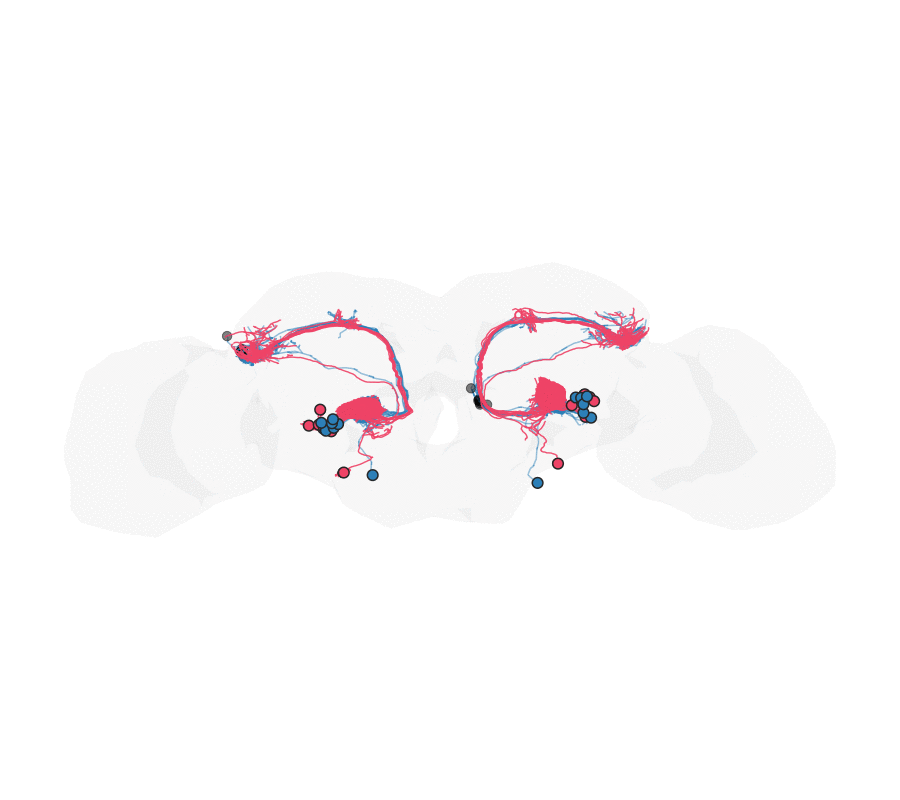

Warping maleCNS DA1 projection neurons onto the BANC
Source:vignettes/malecns-to-banc.Rmd
malecns-to-banc.RmdGoal
Take a cell type reconstructed in two different adult
Drosophila connectomes — the isolated-CNS EM volume
maleCNS and the whole central-nervous-system
BANC — and warp one onto the other so the same neurons
can be compared in a single coordinate frame. We use the DA1
antennal-lobe projection neurons (DA1_lPN +
DA1_vPN), a small, well-defined, bilaterally paired
population.

The registration is driven by the neurons’ own shape, matched per cell type and side, and anchored at the cell bodies:
- a template bridge maleCNS → FAFB14 → JRC2018F → BANC lands the maleCNS neurons on top of the BANC ones to within a few microns;
- each neuron is rooted at its soma and reduced to a
simplified core frame
(
nat::simplify_neuron()), and its surface mesh is decimated to matched complexity on both sides; - a multi-object diffeomorphism
(
deformetrica_register_multi()) fits, per (cell type, side), the core-frame skeletons (Varifold, weighted strongly) and the neuron-surface meshes (Current), plus an ordered soma / root-pointLandmarkcorrespondence and a weak whole-brain hull anchor; - a nat.ggplot animation
(
ggplot_flow_gif()) of the geodesic flow, with the somata shown as circles.
library(deformetricar)
library(nat)
library(malecns) # maleCNS (male-cns:v0.9) neuprint client + bridging landmarks
library(bancr) # BANC CAVE/neuprint client + JRC2018F<->BANC bridge + surfaces
library(neuprintr)
library(nat.flybrains); library(nat.jrcbrains); library(nat.templatebrains)
library(fafbseg)
library(Rvcg); library(Morpho) # mesh decimation / merging
# Tokens: the maleCNS and BANC data live behind neuPrint / CAVE. Follow the setup in
# the malecns, bancr and neuprintr READMEs to get your own tokens into ~/.Renviron.
#
# One-time: set up the Deformetrica CLI this package wraps, in a managed conda env.
# install_deformetrica() # (skip if find_deformetrica() already resolves)Everything runs locally on a CPU (device = "cpu");
device = "auto" uses a CUDA GPU if present. Work in
microns — Deformetrica needs O(1–100) coordinates, and a fit in
nm can silently collapse to an identity warp. BANC and maleCNS data come
in nm, so we divide by 1000 throughout.
1. Fetch both datasets: metadata, skeletons, meshes, somata
Both connectomes annotate the DA1 uniglomerular projection neurons as
DA1_lPN and DA1_vPN (we exclude the receptor
neurons ORN_DA1). We keep each neuron’s cell type
and side, and drop any neuron missing either — the registration
matches strictly by (type, side).
um <- function(x) { xyzmatrix(x) <- xyzmatrix(x) / 1000; x }
## --- maleCNS: metadata, skeletons, somata (all native nm) ---
mm <- mcns_neuprint_meta("DA1")
mm <- mm[mm$type %in% c("DA1_lPN", "DA1_vPN") & mm$somaSide %in% c("L", "R"), ]
mn <- nlapply(read_mcns_neurons(mm$bodyid), resample, stepsize = 1000)
# somaLocation is an "x,y,z" string in 8 nm voxels -> native nm:
msoma <- do.call(rbind, lapply(strsplit(mm$somaLocation, ","), as.numeric)) * 8
## --- BANC: metadata, L2 skeletons, somata from the nucleus table (native nm) ---
bm <- banc_meta()
bm <- bm[bm$type %in% c("DA1_lPN", "DA1_vPN") & bm$side %in% c("left", "right"), ]
bn <- nlapply(banc_read_l2skel(bm$id), resample, stepsize = 1000)
nuc <- banc_nuclei(rootids = bm$id) # nucleus_position_nm (nm)
bsoma <- data.frame(xyzmatrix(nuc$nucleus_position_nm),
root_id = as.character(nuc$root_id))Neuron meshes are large (hundreds of thousands of
faces), so we decimate each to a common target — the key is matched
complexity on both sides so the Current attachment
compares like with like.
TARFACE <- 1000L
mme <- nlapply(read_mcns_meshes(mm$bodyid, units = "nm"), Rvcg::vcgQEdecim, tarface = TARFACE)
bme <- nlapply(banc_read_neuron_meshes(bm$id), Rvcg::vcgQEdecim, tarface = TARFACE)2. Bridge the maleCNS side into BANC space
maleCNS and BANC each have their own template. We hop through the
shared fly templates — the malecns package ships landmark
bridges to FAFB14, nat.jrcbrains carries
FAFB14 → JRC2018F, and bancr inverts its
own JRC2018F ↔︎ BANC thin-plate spline — carrying the
neurons, meshes and somata through the same transform.
malecns:::mcns_register_xforms() # register the bundled malecns<->FAFB14 bridges
to_banc <- function(x) {
x <- xform_brain(x, sample = "malecns", reference = "FAFB14")
x <- xform_brain(x, sample = "FAFB14", reference = "JRC2018F")
banc_to_JRC2018F(x, region = "brain", banc.units = "nm", inverse = TRUE) # -> BANC nm
}
mn <- um(to_banc(mn)); bn <- um(bn)
mme <- nlapply(mme, function(m) um(`xyzmatrix<-`(m, value = to_banc(xyzmatrix(m)))))
bme <- nlapply(bme, um)
msoma <- to_banc(msoma) / 1000 # BANC µm
bsoma[c("X","Y","Z")] <- bsoma[c("X","Y","Z")] / 10003. Prepare the registration objects
Root at the soma, then simplify to a core frame. A
soma sits at the end of a backbone, so we first re-root each neuron
there (nat::reroot() at the soma point), then reduce it to
its main branches with nat::simplify_neuron(). The core
frame aligns the neuron’s skeleton without the noise of fine twigs (and
is much lighter to fit).
msl <- setNames(asplit(msoma, 1), as.character(mm$bodyid))
bsl <- setNames(asplit(as.matrix(bsoma[c("X","Y","Z")]), 1), bsoma$root_id)
core <- function(nl, somalist, n = 5) {
ids <- names(nl)
out <- lapply(seq_along(nl), function(i) {
x <- nl[[i]]; p <- somalist[[ ids[i] ]]
if (!is.null(p)) x <- tryCatch(reroot(x, point = as.numeric(p)), error = function(e) x)
resample(tryCatch(simplify_neuron(x, n = n), error = function(e) x), stepsize = 3)
})
as.neuronlist(setNames(out, ids))
}Soma correspondence. Collapse each dataset’s cell
bodies to a centroid per (side, type) and match the
groups the two datasets share — an ordered Landmark object
pinning the lateral (lPN) and ventral (vPN)
cell-body clusters.
sdf <- function(xyz, side, type) data.frame(xyz, grp = paste(side, type))
mS <- sdf(msoma, mm$somaSide, mm$type)
bmap <- bm[match(bsoma$root_id, as.character(bm$id)), c("side", "type")]
bS <- sdf(as.matrix(bsoma[c("X","Y","Z")]),
ifelse(bmap$side == "left", "L", "R"), bmap$type)
bS <- bS[!is.na(bS$grp) & !is.na(bS[[1]]), ]
cen <- function(df) do.call(rbind, lapply(split(df, df$grp),
function(s) data.frame(grp = s$grp[1], t(colMeans(as.matrix(s[1:3]))))))
mc <- cen(mS); bc <- cen(bS); common <- intersect(mc$grp, bc$grp)
soma_src <- as.matrix(mc[match(common, mc$grp), 2:4])
soma_tgt <- as.matrix(bc[match(common, bc$grp), 2:4])
rownames(soma_src) <- rownames(soma_tgt) <- common
# Weak identity anchor: sparse hull points pin the far field near-identity.
hull <- um(as.mesh3d(bancr::banc_brain_neuropil.surf))
set.seed(1); anc <- xyzmatrix(hull)[sample(ncol(hull$vb), 400L), ]4. One diffeomorphism, matched per cell type and side
deformetrica_register_multi() fits a single
diffeomorphism to every object at once. For each (type, side) present in
both datasets we add the core-frame skeleton
(Varifold, weighted strongly via a small
data_sigma) and the merged, re-decimated surface mesh
(Current). The soma landmarks pin the cell bodies; the hull
anchor keeps the warp local.
mtype <- setNames(as.character(mm$type), as.character(mm$bodyid))[names(mn)]
btype <- setNames(as.character(bm$type), as.character(bm$id))[names(bn)]
msd <- setNames(as.character(mm$somaSide), as.character(mm$bodyid))[names(mn)]
bsd <- setNames(ifelse(bm$side == "left", "L", "R"), as.character(bm$id))[names(bn)]
mergedec <- function(nl) Rvcg::vcgQEdecim(
Rvcg::vcgClean(Morpho::mergeMeshes(unname(as.list(nl))), sel = 0:1), tarface = 1500L)
srcs <- tgts <- list(); okw <- sig <- c()
for (s in c("L", "R")) for (g in c("DA1_lPN", "DA1_vPN")) {
mi <- names(mn)[msd == s & mtype == g]; bi <- names(bn)[bsd == s & btype == g]
if (!length(mi) || !length(bi)) next
k <- sprintf("PN_%s_%s", s, sub("DA1_", "", g))
srcs[[k]] <- core(mn[mi], msl); tgts[[k]] <- core(bn[bi], bsl); okw[k] <- 15; sig[k] <- 1
mk <- paste0(k, "_mesh")
srcs[[mk]] <- mergedec(mme[mi]); tgts[[mk]] <- mergedec(bme[bi]); okw[mk] <- 20; sig[mk] <- 2
}
srcs$soma <- soma_src; tgts$soma <- soma_tgt; okw["soma"] <- 60; sig["soma"] <- 0.3
kw <- sqrt(sum((apply(xyzmatrix(hull), 2, max) - apply(xyzmatrix(hull), 2, min))^2)) / 15
fit <- deformetrica_register_multi(
srcs, tgts, kernel_width = kw, object_kernel_width = okw, data_sigma = sig,
landmarks = list(source = anc, target = anc), landmark_sigma = 8,
timepoints = 15L, max_iterations = 40L, device = "cpu")5. Animate the warp, with root points as circles
deformetrica_shoot(..., flow = TRUE) returns every
timepoint of the geodesic flow. ggplot_flow_gif() renders
the maleCNS neurons (red) flowing onto the static BANC targets (blue) in
the brain hull; points draws the somata as
circles — the moving maleCNS root points and the static BANC
ones — so the cell-body match is visible.
sh <- function(x) deformetrica_shoot(x, fit$control_points, fit$momenta,
kernel_width = fit$kernel_width, timepoints = 15L,
device = "cpu", flow = TRUE)
mn_L <- mn[msd == "L"]; mn_R <- mn[msd == "R"]
bn_L <- bn[bsd == "L"]; bn_R <- bn[bsd == "R"]
ggplot_flow_gif(
list(maleCNS_L = sh(mn_L), maleCNS_R = sh(mn_R)),
cols = c(maleCNS_L = "#EE4266", maleCNS_R = "#EE4266"), alpha = 0.9,
volume = Rvcg::vcgQEdecim(hull, tarface = 3000L), volume_col = "grey70", volume_alpha = 0.06,
targets = list(BANC_L = bn_L, BANC_R = bn_R),
target_cols = c(BANC_L = "#2C7FB8", BANC_R = "#2C7FB8"), target_alpha = 0.5,
points = list(maleCNS_soma = sh(msoma), BANC_soma = as.matrix(bsoma[c("X","Y","Z")])),
point_cols = c(maleCNS_soma = "#EE4266", BANC_soma = "#2C7FB8"), point_size = 3.2,
rotation_matrix = bancr::banc_rotation_matrices[["front"]], delay = 0.15,
file = "malecns_to_banc.gif") # needs the gifski (or magick) package6. Validation
Score the arbours by the median nearest-point distance from each warped maleCNS neuron to the nearest BANC neuron (per side), and the somata by the per-group centroid distance — both should beat the template-bridge baseline.
nnd <- function(a, b) median(Rvcg::vcgKDtree(xyzmatrix(b), xyzmatrix(a), k = 1)$distance)
warp <- function(x) deformetrica_shoot(x, fit$control_points, fit$momenta,
kernel_width = fit$kernel_width)
data.frame(side = c("L", "R"),
bridge = c(nnd(mn_L, bn_L), nnd(mn_R, bn_R)),
warp = c(nnd(warp(mn_L), bn_L), nnd(warp(mn_R), bn_R)))
ws <- xyzmatrix(warp(soma_src))
data.frame(group = rownames(soma_src),
bridge = sqrt(rowSums((soma_src - soma_tgt)^2)),
warp = sqrt(rowSums((ws - soma_tgt)^2)))Typical numbers here: the arbours tighten from ~1.0–1.1 µm (bridge) to ~0.75–0.82 µm (warp), and the soma clusters from a mean ~26 µm to ~13–23 µm.
Notes
-
Match by cell type and side. The rare
DA1_vPN(one per side) would drift if pooled into anlPN-dominated bundle, so each (type, side) is its own object; a neuron missing either label is dropped. -
Skeleton core frame + surface mesh. Rooting at the
soma and simplifying keeps the neuron’s “core frame” for a tight
Varifoldfit; the decimated mesh adds the surface “mask” as aCurrent. Keep the mesh complexity matched across datasets (both decimated to the same face count) so the surfaces are comparable — if the meshes are too heavy, decimate harder withRvcg. -
Somata need their own landmark. A soma is one point
with negligible curve/surface mass, so the shape terms barely feel it;
the ordered soma
Landmarkpins the cell bodies. ThelPNclusters align tightly; thevPNsomata sit ~30–50 µm apart even when their arbours match — a genuine cross-dataset difference a smooth warp cannot fully absorb without tearing the neuron. Use the curated soma fields (maleCNSsomaLocation, BANCbanc_nuclei()), not the skeleton root, which for an L2 skeleton need not sit at the soma. -
Tuning levers.
data_sigma(smaller = stronger),object_kernel_width(matching scale) and the globalkernel_width(stiffness) trade global against local fit; the soma landmark’s weight is the main lever on how hard cell bodies are pulled together. -
Template bridge. The maleCNS → FAFB14 → JRC2018F →
BANC hop reuses published registrations; swap the final
banc_to_JRC2018F()step to target a different dataset. ```